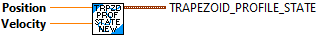

Compares the values of two Trapezoid Profile States. If both are EXACTLY equal, True is returned.
Inputs:
- Trapezoid_Profile_state -- The first state to compare
- Trapezoid_Profile_state_2 -- The second state to comapre
Outputs:
- Equal -- True if both states are identical.

Creates a new Trapzoid Profile State data cluster. This could be a demand, actual, or goal (setpoint) data cluster depending on how it is used.
Inputs:
- Position -- Value for position
- Velocity -- Value for velocity.
Outputs::
- Trapezoid_Profile_State -- Initialized data cluster